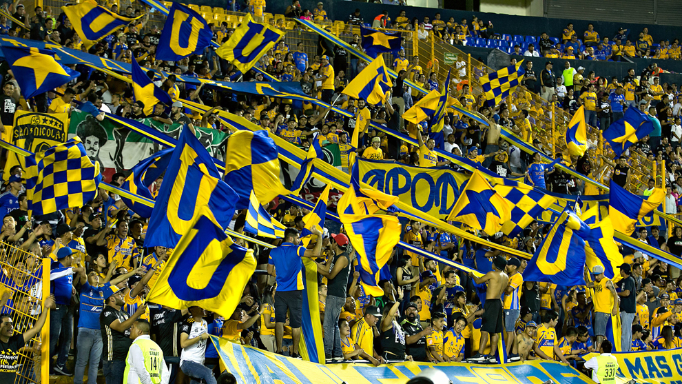

FUTBOL
Me gusta mucho el fútbol; es una de mis grandes pasiones. Disfruto ver partidos de distintas ligas, sin importar la hora o el lugar: siempre que hay un buen partido, me gusta estar atento. El equipo al que apoyo son los Tigres de la UANL. Me siento profundamente identificado con sus colores, su historia y, sobre todo, con la pasión de su afición. Una de las cosas que más me atrajo del equipo fue precisamente eso: el ambiente tan vibrante y colorido que se vive en cada partido. Asistir al Estadio Universitario es una experiencia que disfruto mucho. Me encanta estar en las tribunas, rodeado de gente que comparte la misma emoción, cantando, apoyando, y siendo parte de ese espíritu colectivo que hace único al equipo.
